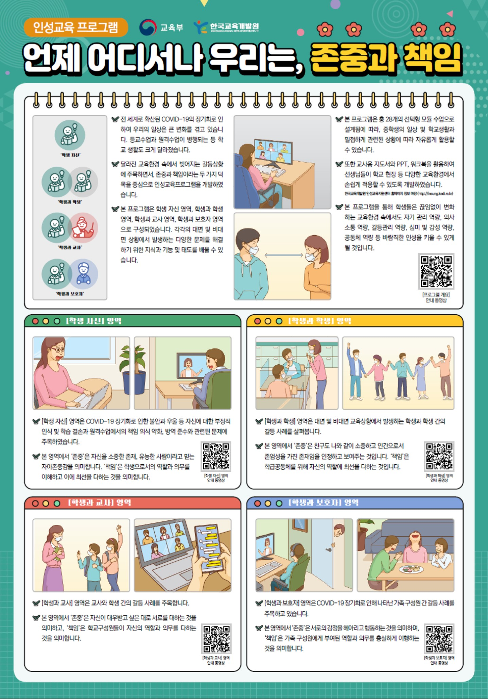
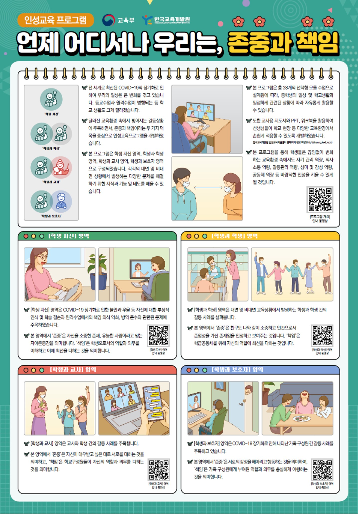

|  |  |
언제 어디서나 우리는, 존중과 책임 대면/비대면 상황에서 본인, 친구, 선생님, 부모님과의 관계 속에서 서로 존중하고 책임있게 행동하는 태도를 함양 |
온라인에서의 위험상황 대처법 온라인상의 다양한 위험상황을 구체적인 사례를 통해 이해할 수 있도록 구성하였고 QR코드로 심화 내용 확인이 가능함. |
|  | |
언제 어디서나 우리는, 존중과 책임 대면/비대면 상황에서 본인, 친구, 선생님, 부모님과의 관계 속에서 서로 존중하고 책임있게 행동하는 태도를 함양 |
온라인에서의 위험상황 대처법 온라인상의 다양한 위험상황을 구체적인 사례를 통해 이해할 수 있도록 구성하였고 QR코드로 심화 내용 확인이 가능함. |